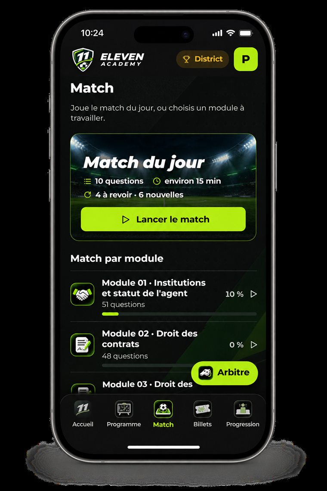
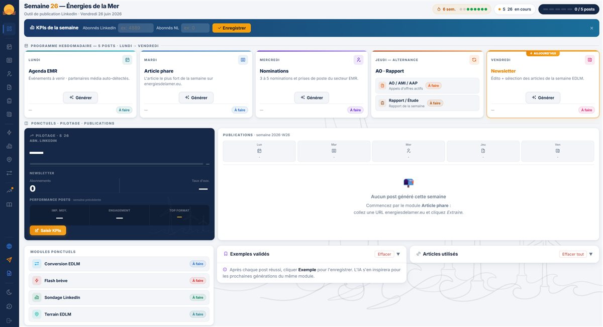
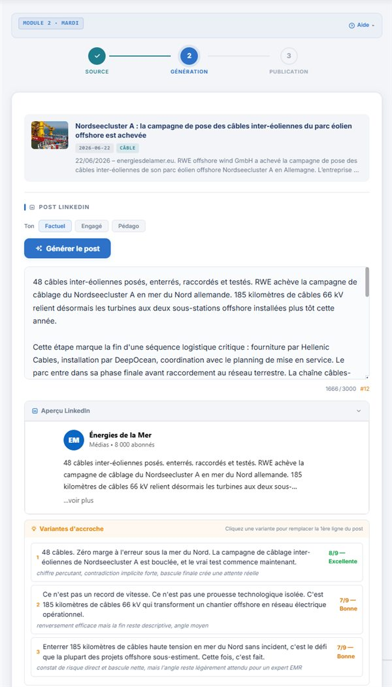
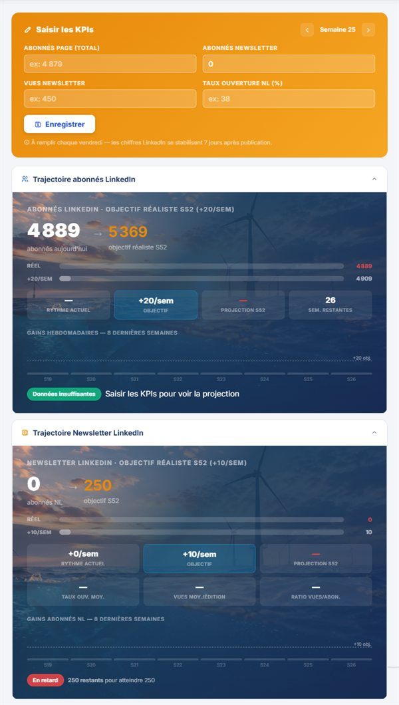

Huit applications IA en service. L'IA produit.
Je décide.
Responsable communication stratégique, 20 ans d'expérience. Je conçois et pilote des outils IA qui font gagner des heures aux équipes, en gardant la main sur chaque décision.
 Dernière application · novembre 2026
Dernière application · novembre 2026
Ce que l'IA change
Les applications, la plus récente en tête
Pour chacune : le problème réglé, et ce que l'IA a changé. Un clic ouvre la fiche détaillée.
-
Novembre 2026 · application privée
Eleven Academy
Préparer l'examen d'agent sportif, chaque réponse rattachée à l'article de loi en vigueur.
Après5 min par notionUne leçon par notion · 133 leçons · 421 questions · veille juridique chaque lundi
-
Septembre 2026 · en production
Concertation territoriale
Piloter la concertation d'un projet d'énergie : parties prenantes, risques, actions.
Avant, par semaine≈ 2 hAprès≈ 15 min -
2026 · en production
Vocalink
Dire une idée à voix haute : elle revient classée, prête à devenir une action.
Avant≈ 2 minAprès≈ 10 s -
2026 · client Énergies de la Mer
Article → LinkedIn
Un article du site devient un post LinkedIn prêt à relire, puis publié sans copier-coller.
Avant≈ 1 hAprès5 min


-
2026 · en production
Photothèque rédaction
De l'iPhone à la galerie : photos rangées, légendes proposées par l'IA, validées par l'équipe.
 Avant, par événement15–30 minAprès, par photo5 s
Avant, par événement15–30 minAprès, par photo5 s -
En production
Newsletter IA
Collecte, rédaction, images et envoi : l'humain choisit les sujets et valide avant l'envoi.
Avant≈ 4–6 hAprès30 min -
En production
Agent de veille emploi
Chaque matin, environ 180 offres triées ; 2 à 5 retenues, avec la raison.
Avant45 minAprès5 min -
En ligne
Générateur de candidature
Lettre, mails et profil adapté aux logiciels de recrutement, à partir des seuls faits du candidat.
Avant2–3 hAprès20 min
≈ : estimation. Les autres chiffres sont mesurés sur les applications en service.
Sur chaque application : la part de l'IA, la part de l'humain.
Ce que l'IA fait vite, ce que je garde pour moi, et ce que ça change. Choisissez une application.